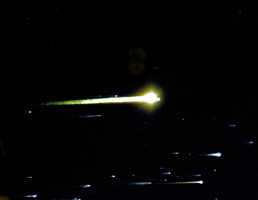
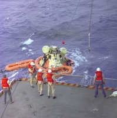
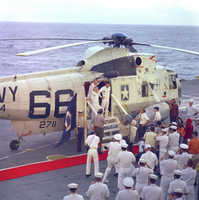

12/27/1968SearchApollo 8 Reentry: This Apollo 8 reentry photograph was taken by a U.S. Air Force ALOTS (Airborne Lightweight Optical Tracking System) camera mounted on a KC-135A aircraft flown at 40,000 ft altitude. Apollo 8 splashed down at 10:15 a.m., December 27, 1968, in the central Pacific approximately 1,000 miles South-Southwest of Hawaii. (NASA on The Commons)Apollo 8 Recovery: A team of U.S. Navy underwater demolition swimmers prepares the Apollo 8 command module for being hoisted aboard the carrier U.S.S. Yorktown, prime recovery vessel for the initial manned lunar orbital mission. The crew members - astronauts Frank Borman, James A. Lovell, Jr., and William A. Anders - had already egressed the spacecraft and were aboard the recovery ship at the time of this photo.Apollo 8 Recovery: The Apollo 8 crew stands in the doorway of a recovery helicopter after arriving aboard the carrier U.S.S. Yorktown, recovery vessel for the historic initial manned lunar orbital mission. In left foreground is astronaut Frank Borman, Mission Commander. Behind Borman is astronaut James A. Lovell Jr., Command Module pilot; and on the right is astronaut William A. Anders, Lunar Module pilot. Apollo 8 splashed down at 10:51 a.m. (EST), December 27, 1968, in the central Pacific Ocean, approximately 1,000 miles south-southwest of Hawaii.